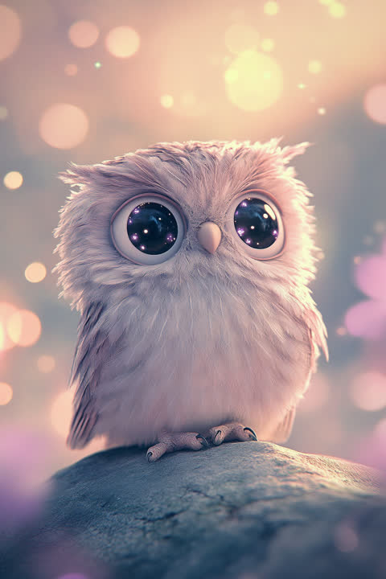

In the language of Five Element fortune-telling, the 'The Owl Who Sees Right Through You' type carries a Water temperament. Lucky color: indigo.
You can sit through an entire meeting without a word and still walk out knowing exactly what everyone in the room was really thinking. You'd trade ten small talks for one honest conversation, and you keep your circle small on purpose. People call you mysterious because your feelings live far below the surface — but down there, a fiercely held ideal is burning steadily. Once you believe in something, your quiet resolve barely wavers. Your element is Water — moving deep and silent, taking the shape each moment requires. Lucky color: indigo. Tip: before a thought finishes its hundredth lap in your head, say it out loud to someone you trust — it gets lighter the moment it leaves.
You're not quick to close the distance — but that's not a wall. It's that your love is built for deep water, not the shallows. Playing at romance doesn't interest you; you're quietly searching for someone who can dive all the way down with you. You notice when their voice sounds one shade different from yesterday. And once you finally open up, your devotion is as vivid as the view after fog lifts. Your Water energy points to a supple love that shapes itself around the person you're with. Lucky action: spend more time near water. Tip: reveal your real feelings one step earlier than feels natural — that single step can deepen everything at once.
You never bark orders, yet somehow the team ends up sailing in the direction you quietly pointed. You keep the question "what is this work actually for?" close at hand, and when the meaning is real, your focus fills like a sail catching wind. You sense shifts in team dynamics early, and your solo thinking time is what keeps your steering precise. Your Water energy favors reading the currents — that flexibility is what pulls unexpected opportunities your way. Lucky action: stay hydrated throughout the day. Tip: don't sail in silence with a head full of charts — share the route while you're still mid-voyage.
Counseling and psychology, editing and writing, HR roles in organizational development or career support, education and nonprofit work — jobs that use both your knack for reading what's going on inside people and your drive to turn ideals into something real. You come into your own in deep one-on-one conversations and in fields that track how people change over the long haul.
The key to your growth is showing people things before they're finished. You're the type to polish a vision in your head before letting it out into the world, but that perfectionism is also the front door to burnout. Talk your idea through with someone you trust when it's only half-formed, and you'll keep the ideal from turning into a private monologue — and keep yourself from carrying it all alone. You also tend to absorb other people's emotions like a sponge, so know that about yourself, and end each day by sorting: "Is what I'm feeling right now mine, or theirs?" That habit is what lets you keep using your deep empathy without running it dry.
This quiz scores your Personality, Love, and Career types independently, so the three don't always come out as the same type. Curious what your real type is? Try the free 3-minute quiz.